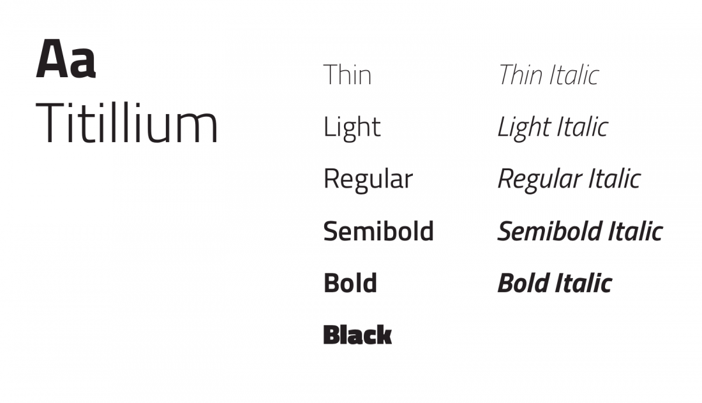

¿A QUÉ NOS DEDICAMOS?
En 2020 colaboramos en 138 países gracias a 345.000 benefactores en 23 países. La generosidad de nuestros benefactores nos facilitó 122,7 millones de euros en donaciones, que fueron utilizados para financiar actividades con un presupuesto de 102,1 millones de euros. Los 20,6 millones de euros restantes no pudieron emplearse en 2020 debido a retrasos motivados por el coronavirus, pero se utilizaron para financiar proyectos en el primer semestre de 2021.
79,1% de los fondos se destinaron a gastos relacionados con la misión, es decir, trabajos necesarios para la misión, es decir, trabajos necesarios para proyectos concretos, tareas de información, apoyo mediático y actividades de oración.
Así, en 2020 pudimos apoyar 4.758 proyectos en 138 países con aproximadamente 68,6 millones de euros. Con otros 12,2 millones de euros fuimos capaces de realizar tareas de información, divulgación de la fe y ayuda a cristianos discriminados y perseguidos en todo el mundo.
PROYECTOS
EMERGENCIA EN UCRANIA
La Iglesia en Ucrania, a la que desde esta Fundación Pontificia llevamos apoyando de forma preferente desde hace más de 40 años, nos ha dejado muy claro desde el principio que sus sacerdotes y sus religiosas se quedarán junto a su pueblo, acogiendo, sosteniendo, aliviando, sirviendo.
PERSEGUIDOS POR SER CRISTIANOS
Hoy, en pleno siglo XXI, más de 646 millones de cristianos viven en países donde no se respeta la libertad religiosa, sufren discriminación y desprecio, no pueden optar a determinados puestos de trabajo ni recibir un mínimo de educación, lo que les deja sumidos en la pobreza.
BARCO PARA PASTORAL EN EL AMAZONAS
Los escasos sacerdotes solo pueden visitar algunas parroquias una o dos veces al año. En dichas visitas, mientras el sacerdote se concentra en la administración de los sacramentos, los misioneros laicos que lo acompañan imparten la catequesis y otras formas de enseñanza de la fe.
TIPOGRAFÍA
Titillium Web
Titillium nace dentro de la Accademia di Belle Arti di Urbino como un proyecto didáctico Course Type design del Master of Visual Design Campi Visivi.
El objetivo del proyecto es la creación de fuentes colectivas publicadas bajo OFL. Cada año académico, una docena de estudiantes trabajan en el proyecto, desarrollándolo y resolviendo problemas. Cualquier diseñador tipográfico interesado en la modificación o revisión de Titillium está invitado a cooperar con nosotros o desarrollar sus propias variantes del tipo de letra de acuerdo con los términos especificados en la licencia de Open Font. También pedimos a todos los diseñadores gráficos que utilizan Titillium en sus proyectos que nos envíen por correo electrónico algunos ejemplos de la familia tipográfica en uso, con el fin de preparar una base de datos de casos.
Tres años después del nacimiento de Titillium, el proyecto sigue evolucionando, e incluso no sabemos en qué se convertirá en el futuro.



{kind=link}
{kind=link}
{kind=link}
{kind=link}